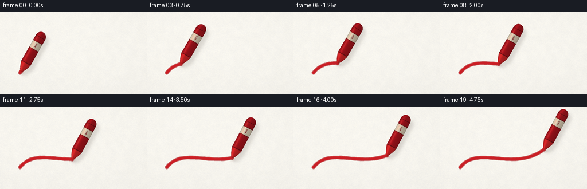
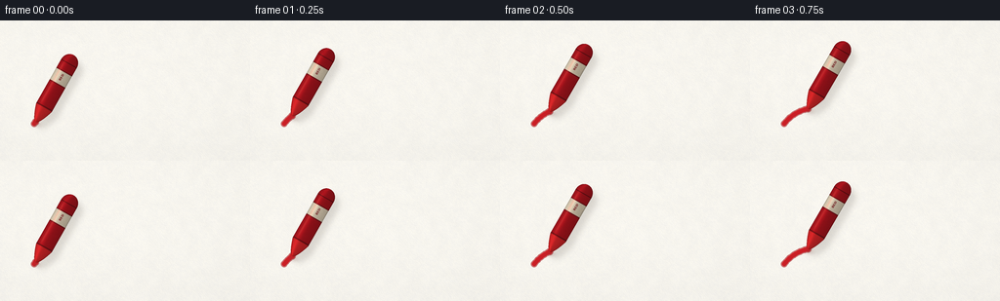

CODING AGENTS AS PIXEL WORLD MODELS
traex/DeepSeek-V4.1-Flash · phygen_033
点击播放 · 原生 RGB 像素
逐轮保存的候选
回放视频、检查图与代码变化。
每份候选均可单独播放。实际图片检查记录在下方工具轨迹中。
候选 01播放与检查图
点击播放 · 原生 RGB 像素


展开代码变化
--- 上一保存版本
+++ 本次保存版本
@@ -0,0 +1,397 @@
+from pathlib import Path
+import math
+
+import numpy as np
+from PIL import Image, ImageDraw, ImageFilter, ImageFont
+
+import artifact_io
+
+
+WIDTH = 256
+HEIGHT = 144
+FPS = 4.0
+FRAME_COUNT = 20
+SS = 4 # Supersampling factor for clean edges at this small output size.
+
+CASE_DIR = Path(__file__).resolve().parent
+CW = WIDTH * SS
+CH = HEIGHT * SS
+
+
+def _resized_noise(rng, small_shape):
+ values = (rng.random(small_shape) * 255.0).astype(np.uint8)
+ image = Image.fromarray(values, "L").resize((CW, CH), Image.Resampling.BICUBIC)
+ return np.asarray(image, dtype=np.float32) / 255.0
+
+
+def build_paper():
+ rng = np.random.default_rng(3307)
+
+ n_coarse = _resized_noise(rng, (18, 32))
+ n_mid = _resized_noise(rng, (72, 128))
+ n_fine = _resized_noise(rng, (288, 512))
+ n_micro = _resized_noise(rng, (576, 1024))
+
+ grain = (
+ 0.34 * (n_coarse - 0.5)
+ + 0.27 * (n_mid - 0.5)
+ + 0.23 * (n_fine - 0.5)
+ + 0.16 * (n_micro - 0.5)
+ )
+
+ # A shallow emboss makes the paper feel pressed and fibrous rather than flat.
+ gy, gx = np.gradient(n_fine)
+ emboss = np.clip((gx - gy) * 9.0, -1.0, 1.0)
+
+ yy, xx = np.mgrid[0:CH, 0:CW].astype(np.float32)
+ xn = xx / max(1, CW - 1)
+ yn = yy / max(1, CH - 1)
+ light = (
+ 1.012
+ - 0.020 * (xn - 0.32) ** 2
+ - 0.026 * (yn - 0.28) ** 2
+ - 0.012 * ((xn - 0.5) ** 2 + (yn - 0.5) ** 2)
+ )
+ lum = light + 0.035 * grain + 0.012 * emboss
+
+ paper = np.empty((CH, CW, 3), dtype=np.float32)
+ paper[..., 0] = 245.5 + 1.6 * (n_mid - 0.5) + 1.2 * (n_fine - 0.5)
+ paper[..., 1] = 243.4 + 1.1 * (n_mid - 0.5) + 0.7 * (n_fine - 0.5)
+ paper[..., 2] = 236.8 - 1.2 * (n_mid - 0.5) - 0.8 * (n_fine - 0.5)
+ paper *= lum[..., None]
+ paper = np.clip(paper, 0.0, 255.0)
+
+ base_image = Image.fromarray(paper.astype(np.uint8), "RGB").convert("RGBA")
+ fibers = Image.new("RGBA", (CW, CH), (0, 0, 0, 0))
+ fiber_draw = ImageDraw.Draw(fibers)
+
+ # Sparse fibers survive the downsample and catch the light without looking noisy.
+ for _ in range(1250):
+ x = rng.uniform(-8.0, CW + 8.0)
+ y = rng.uniform(-8.0, CH + 8.0)
+ length = rng.uniform(3.0, 20.0) * SS / 4.0
+ angle = rng.uniform(-0.45, 0.45)
+ if rng.random() < 0.28:
+ angle += math.pi * 0.5
+ dx = math.cos(angle) * length
+ dy = math.sin(angle) * length
+ if rng.random() < 0.62:
+ color = (176, 170, 160, int(rng.integers(5, 15)))
+ else:
+ color = (255, 255, 250, int(rng.integers(8, 22)))
+ fiber_draw.line((x, y, x + dx, y + dy), fill=color, width=1)
+
+ for _ in range(160):
+ x = rng.uniform(0.0, CW)
+ y = rng.uniform(0.0, CH)
+ radius = rng.uniform(0.4, 1.3) * SS / 4.0
+ color = (150, 145, 137, int(rng.integers(5, 14)))
+ fiber_draw.ellipse((x - radius, y - radius, x + radius, y + radius), fill=color)
+
+ paper_image = Image.alpha_composite(base_image, fibers).convert("RGB")
+ return np.asarray(paper_image, dtype=np.float32)
+
+
+def bezier_point(t):
+ p0 = np.array([35.0, 106.0], dtype=np.float64)
+ p1 = np.array([66.0, 66.0], dtype=np.float64)
+ p2 = np.array([127.0, 115.0], dtype=np.float64)
+ p3 = np.array([181.0, 75.0], dtype=np.float64)
+ omt = 1.0 - t
+ return (
+ (omt ** 3) * p0
+ + 3.0 * (omt ** 2) * t * p1
+ + 3.0 * omt * (t ** 2) * p2
+ + (t ** 3) * p3
+ )
+
+
+def build_path():
+ samples = np.linspace(0.0, 1.0, 900)
+ points = np.array([bezier_point(t) for t in samples], dtype=np.float32)
+ distances = np.r_[0.0, np.cumsum(np.linalg.norm(np.diff(points, axis=0), axis=1))]
+ progress = distances / distances[-1]
+ return points, progress, float(distances[-1])
+
+
+PATH_POINTS, PATH_PROGRESS, PATH_LENGTH = build_path()
+
+
+def point_at_progress(progress):
+ target = float(np.clip(progress, 0.0, 1.0))
+ index = int(np.searchsorted(PATH_PROGRESS, target, side="right") - 1)
+ index = int(np.clip(index, 0, len(PATH_POINTS) - 2))
+ a = float(PATH_PROGRESS[index])
+ b = float(PATH_PROGRESS[index + 1])
+ mix = 0.0 if b <= a else (target - a) / (b - a)
+ return PATH_POINTS[index] * (1.0 - mix) + PATH_POINTS[index + 1] * mix
+
+
+def build_stroke_texture():
+ rng = np.random.default_rng(9281)
+ noise_mid = _resized_noise(rng, (144, 256))
+ noise_fine = _resized_noise(rng, (576, 1024))
+ return noise_mid, noise_fine
+
+
+STROKE_NOISE_MID, STROKE_NOISE_FINE = build_stroke_texture()
+
+
+def alpha_blend(dst, color, alpha):
+ a = np.clip(alpha, 0.0, 1.0)
+ return dst * (1.0 - a[..., None]) + color * a[..., None]
+
+
+def draw_wax_stroke(paper, progress):
+ output = paper.copy()
+ if progress <= 0.0:
+ return output
+
+ outer = Image.new("L", (CW, CH), 0)
+ core = Image.new("L", (CW, CH), 0)
+ outer_draw = ImageDraw.Draw(outer)
+ core_draw = ImageDraw.Draw(core)
+
+ end_index = int(np.searchsorted(PATH_PROGRESS, progress, side="right"))
+ end_index = max(2, min(end_index, len(PATH_POINTS)))
+ points = PATH_POINTS[:end_index]
+ tip = point_at_progress(progress)
+ points = np.vstack([points, tip[None, :]])
+
+ for index, point in enumerate(points):
+ along = index / max(1, len(points) - 1)
+ wobble = (
+ 0.055 * math.sin(along * 29.0 + 0.7)
+ + 0.035 * math.sin(along * 71.0 + 2.1)
+ )
+ pressure = 1.0 + wobble
+ x = float(point[0] * SS)
+ y = float(point[1] * SS)
+ outer_radius = 3.05 * SS * pressure
+ core_radius = 2.08 * SS * pressure
+ outer_draw.ellipse(
+ (x - outer_radius, y - outer_radius, x + outer_radius, y + outer_radius),
+ fill=255,
+ )
+ core_draw.ellipse(
+ (x - core_radius, y - core_radius, x + core_radius, y + core_radius),
+ fill=255,
+ )
+
+ # The moving tip leaves a slightly fuller, freshly pressed patch.
+ tx = float(tip[0] * SS)
+ ty = float(tip[1] * SS)
+ outer_draw.ellipse((tx - 3.7 * SS, ty - 3.7 * SS, tx + 3.7 * SS, ty + 3.7 * SS), fill=255)
+ core_draw.ellipse((tx - 2.7 * SS, ty - 2.7 * SS, tx + 2.7 * SS, ty + 2.7 * SS), fill=255)
+
+ outer_mask = np.asarray(outer, dtype=np.float32) / 255.0
+ core_mask = np.asarray(core, dtype=np.float32) / 255.0
+
+ rough = np.clip(0.70 + 0.38 * STROKE_NOISE_MID + 0.16 * (STROKE_NOISE_FINE - 0.5), 0.0, 1.0)
+ outer_alpha = outer_mask * (0.43 + 0.18 * rough)
+ core_alpha = core_mask * (0.84 + 0.12 * rough)
+
+ outer_color = np.empty((CH, CW, 3), dtype=np.float32)
+ outer_color[..., 0] = 166.0
+ outer_color[..., 1] = 20.0
+ outer_color[..., 2] = 27.0
+
+ core_color = np.empty((CH, CW, 3), dtype=np.float32)
+ core_color[..., 0] = 202.0 + 11.0 * (STROKE_NOISE_MID - 0.5)
+ core_color[..., 1] = 26.0 + 5.0 * (STROKE_NOISE_FINE - 0.5)
+ core_color[..., 2] = 33.0 + 4.0 * (STROKE_NOISE_FINE - 0.5)
+
+ output = alpha_blend(output, outer_color, outer_alpha)
+ output = alpha_blend(output, core_color, core_alpha)
+
+ # A narrow top-left sheen suggests the soft, slightly glossy wax ridge.
+ shifted = np.roll(core_mask, 3, axis=0)
+ ridge = np.clip(core_mask - shifted, 0.0, 1.0)
+ ridge *= np.clip(0.26 + 0.18 * STROKE_NOISE_MID, 0.0, 0.5)
+ highlight = np.empty((CH, CW, 3), dtype=np.float32)
+ highlight[..., 0] = 234.0
+ highlight[..., 1] = 67.0
+ highlight[..., 2] = 61.0
+ output = alpha_blend(output, highlight, ridge)
+
+ return output
+
+
+def make_label_text():
+ body_length = 79.0
+ half_width = 9.0
+ label_w = int((body_length + 4.0) * SS)
+ label_h = int((2.0 * half_width + 4.0) * SS)
+ label = Image.new("RGBA", (label_w, label_h), (0, 0, 0, 0))
+ draw = ImageDraw.Draw(label)
+ font_path = "/usr/share/fonts/truetype/dejavu/DejaVuSans-Bold.ttf"
+ try:
+ font = ImageFont.truetype(font_path, max(8, int(3.25 * SS)))
+ except OSError:
+ font = ImageFont.load_default()
+ draw.text(
+ (53.0 * SS, (half_width + 2.0) * SS),
+ "RED",
+ font=font,
+ fill=(104, 12, 18, 255),
+ anchor="mm",
+ )
+ return np.asarray(label, dtype=np.float32)
+
+
+LABEL_TEXT = make_label_text()
+
+
+def crayon_geometry(tip, angle_degrees):
+ length = 79.0
+ half_width = 9.0
+ tip_length = 17.0
+ cap_length = 10.0
+ theta = math.radians(angle_degrees)
+ back = np.array([math.cos(theta), math.sin(theta)], dtype=np.float32)
+ perp = np.array([-math.sin(theta), math.cos(theta)], dtype=np.float32)
+
+ corners = []
+ for u in (-3.0, length + 3.0):
+ for v in (-half_width - 3.0, half_width + 3.0):
+ corners.append(tip + u * back + v * perp)
+ corners = np.asarray(corners)
+ x0 = int(math.floor(float(corners[:, 0].min()) * SS)) - 2
+ y0 = int(math.floor(float(corners[:, 1].min()) * SS)) - 2
+ x1 = int(math.ceil(float(corners[:, 0].max()) * SS)) + 2
+ y1 = int(math.ceil(float(corners[:, 1].max()) * SS)) + 2
+ x0 = max(0, x0)
+ y0 = max(0, y0)
+ x1 = min(CW, x1)
+ y1 = min(CH, y1)
+ return x0, y0, x1, y1, back, perp, length, half_width, tip_length, cap_length
+
+
+def render_crayon(paper, tip, angle_degrees):
+ x0, y0, x1, y1, back, perp, length, half_width, tip_length, cap_length = crayon_geometry(
+ tip, angle_degrees
+ )
+ if x1 <= x0 or y1 <= y0:
+ return paper
+
+ yy, xx = np.mgrid[y0:y1, x0:x1].astype(np.float32)
+ rel_x = xx / SS - tip[0]
+ rel_y = yy / SS - tip[1]
+ u = rel_x * back[0] + rel_y * back[1]
+ v = rel_x * perp[0] + rel_y * perp[1]
+
+ half = np.full_like(u, half_width, dtype=np.float32)
+ cone = (u >= 0.0) & (u < tip_length)
+ half[cone] = half_width * np.power(np.clip(u[cone] / tip_length, 0.0, 1.0), 0.60)
+
+ cap_start = length - cap_length
+ cap = u > cap_start
+ cap_ratio = np.clip((u[cap] - cap_start) / cap_length, 0.0, 1.0)
+ half[cap] = half_width * np.sqrt(np.clip(1.0 - cap_ratio * cap_ratio, 0.0, 1.0))
+
+ body = (u >= 0.0) & (u <= length) & (np.abs(v) <= half + 0.2)
+ if not np.any(body):
+ return paper
+
+ vn = np.clip(v / np.maximum(half, 0.35), -1.0, 1.0)
+ side_light = 0.5 - 0.5 * vn
+ highlight = np.exp(-((vn + 0.48) / 0.28) ** 2)
+ shade = 0.69 + 0.22 * side_light + 0.18 * highlight
+ shade *= 0.955 + 0.045 * np.clip(1.0 - u / length, 0.0, 1.0)
+
+ is_wax = u < tip_length + 1.0
+ is_wrapper = ~is_wax
+ is_label = (u > 45.0) & (u < 59.5)
+ is_label_edge = (np.abs(u - 45.0) < 0.55) | (np.abs(u - 59.5) < 0.55)
+ is_seam = (np.abs(u - (tip_length + 1.0)) < 0.75) | (np.abs(u - (length - cap_length)) < 0.45)
+
+ color = np.empty((y1 - y0, x1 - x0, 3), dtype=np.float32)
+ color[..., 0] = 177.0
+ color[..., 1] = 18.0
+ color[..., 2] = 27.0
+ color[is_wax] = np.array([219.0, 36.0, 38.0], dtype=np.float32)
+ color[is_label] = np.array([238.0, 222.0, 194.0], dtype=np.float32)
+ color[is_label_edge] = np.array([125.0, 15.0, 21.0], dtype=np.float32)
+ color[is_seam] *= 0.62
+
+ color *= shade[..., None]
+ color *= (0.985 + 0.035 * (STROKE_NOISE_MID[y0:y1, x0:x1] - 0.5))[..., None]
+
+ # Tiny printed lettering on the cream band, sampled in the crayon's local coordinates.
+ lh, lw = LABEL_TEXT.shape[:2]
+ lx = np.clip((u * SS).astype(np.int32), 0, lw - 1)
+ ly = np.clip(((v + half_width + 2.0) * SS).astype(np.int32), 0, lh - 1)
+ text_alpha = LABEL_TEXT[ly, lx, 3] / 255.0
+ text_rgb = LABEL_TEXT[ly, lx, :3]
+ text_alpha *= is_label.astype(np.float32)
+ color = color * (1.0 - text_alpha[..., None]) + text_rgb * text_alpha[..., None]
+
+ edge_distance = half - np.abs(v)
+ edge_dark = np.clip(1.0 - edge_distance / 0.95, 0.0, 1.0)
+ edge_dark *= 0.36
+ color *= (1.0 - edge_dark[..., None] * 0.55)
+
+ spec = np.exp(-((vn + 0.58) / 0.12) ** 2)
+ spec *= np.clip((u - 18.0) / 6.0, 0.0, 1.0) * np.clip((72.0 - u) / 8.0, 0.0, 1.0)
+ spec *= 0.22
+ spec_color = np.array([255.0, 109.0, 91.0], dtype=np.float32)
+ color = color * (1.0 - spec[..., None]) + spec_color * spec[..., None]
+
+ color = np.clip(color, 0.0, 255.0)
+ body_alpha = body.astype(np.float32)
+ body_alpha *= np.clip(0.985 + 0.02 * (STROKE_NOISE_FINE[y0:y1, x0:x1] - 0.5), 0.0, 1.0)
+
+ shadow_mask = Image.new("L", (CW, CH), 0)
+ shadow_patch = Image.fromarray((body_alpha * 255.0).astype(np.uint8), "L")
+ shadow_mask.paste(shadow_patch, (x0 + int(5.0 * SS), y0 + int(7.0 * SS)))
+ shadow_mask = shadow_mask.filter(ImageFilter.GaussianBlur(radius=2.8 * SS))
+ shadow_alpha = np.asarray(shadow_mask, dtype=np.float32) / 255.0
+ shadow_alpha *= 0.19
+ output = alpha_blend(paper, np.array([92.0, 83.0, 76.0], dtype=np.float32), shadow_alpha)
+
+ contact_mask = Image.new("L", (CW, CH), 0)
+ contact_draw = ImageDraw.Draw(contact_mask)
+ cx = float((tip[0] + 1.8) * SS)
+ cy = float((tip[1] + 2.6) * SS)
+ contact_draw.ellipse((cx - 4.2 * SS, cy - 2.4 * SS, cx + 4.2 * SS, cy + 2.4 * SS), fill=175)
+ contact_mask = contact_mask.filter(ImageFilter.GaussianBlur(radius=1.7 * SS))
+ contact_alpha = np.asarray(contact_mask, dtype=np.float32) / 255.0
+ contact_alpha *= 0.32
+ output = alpha_blend(output, np.array([108.0, 62.0, 55.0], dtype=np.float32), contact_alpha)
+
+ roi = output[y0:y1, x0:x1]
+ roi = roi * (1.0 - body_alpha[..., None]) + color * body_alpha[..., None]
+ output[y0:y1, x0:x1] = roi
+
+ return output
+
+
+def render_frame(paper, frame_index):
+ u = frame_index / float(FRAME_COUNT - 1)
+ progress = u * (1.15 - 0.15 * u)
+ progress = 0.015 + 0.985 * progress
+ progress = float(np.clip(progress, 0.0, 1.0))
+
+ tip = point_at_progress(progress)
+ angle = -61.0 + 1.15 * math.sin(progress * 5.3 + 0.4)
+
+ frame = draw_wax_stroke(paper, progress)
+ frame = render_crayon(frame, tip, angle)
+ final = Image.fromarray(np.clip(frame, 0.0, 255.0).astype(np.uint8), "RGB")
+ final = final.resize((WIDTH, HEIGHT), Image.Resampling.LANCZOS)
+ return np.asarray(final, dtype=np.uint8)
+
+
+def main():
+ paper = build_paper()
+ frames = []
+ for index in range(FRAME_COUNT):
+ frames.append(render_frame(paper, index))
+ print(f"rendered {index + 1:02d}/{FRAME_COUNT}", flush=True)
+ frames = np.stack(frames, axis=0)
+ artifact_io.save(frames, CASE_DIR)
+ print(f"saved {frames.shape} to {CASE_DIR}", flush=True)
+
+
+if __name__ == "__main__":
+ main()
可观测工具轨迹
实际执行的命令与返回图片。
命令 1exit 0
/bin/bash -c "pwd && rg --files -g 'prompt.txt' -g 'GENERATION_RULES.md' -g 'task_spec.json' -g '"'!node_modules'"'"
命令 2exit 0
/bin/bash -c 'ls -la'
命令 3exit 0
/bin/bash -c 'git status --short --branch'
命令 4exit 0
/bin/bash -c 'cat prompt.txt'
命令 5exit 0
/bin/bash -c 'cat GENERATION_RULES.md'
命令 6exit 0
/bin/bash -c 'cat task_spec.json'
命令 7exit 0
/bin/bash -c "sed -n '1,240p' artifact_io.py"
命令 8exit 1
/bin/bash -c 'python generate.py'
命令 9exit 0
/bin/bash -c 'python generate.py'
命令 10exit 0
/bin/bash -c 'command -v chafa || command -v viu || command -v jp2 || command -v img2txt || true'
命令 11exit 0
/bin/bash -c "python - <<'PY'
from PIL import Image
import numpy as np
from pathlib import Path
p=Path('.')
for name in ['inspection.png','transition_check.png']:
im=Image.open(name)
print(name, im.size, im.mode)
frames=[np.array(Image.open(f'frames/{i:02d}.png')) for i in range(20)]
print('frame shapes', frames[0].shape, frames[0].dtype)
for i,a in enumerate(frames):
red=(a[:,:,0].astype(int)-np.maximum(a[:,:,1],a[:,:,2]).astype(int)>25)&(a[:,:,0]>90)
print(f'{i:02d}: mean={a.mean():.1f} red_px={red.sum():4d} bbox=', end='')
ys,xs=np.where(red)
print((int(xs.min()),int(ys.min()),int(xs.max()),int(ys.max())) if len(xs) else None)
print('diff pixels per step', [int(np.any(frames[i]"'!=frames[i-1],axis=2).sum()) for i in range(1,20)])
PY'命令 12exit 0
/bin/bash -c "du -h pixels.npz index.html frames/00.png frames/19.png inspection.png transition_check.png && python - <<'PY'
import zipfile,json
with zipfile.ZipFile('pixels.npz') as z: print('npz entries',z.namelist())
print('html bytes', len(open('index.html','rb').read()))
PY"命令 13exit 0
/bin/bash -c "python - <<'PY'
from PIL import Image
import numpy as np
for idx in [0,5,10,15,19]:
im=np.array(Image.open(f'frames/{idx:02d}.png').resize((64,36),Image.Resampling.BILINEAR))
red=(im[:,:,0].astype(int)>110)&(im[:,:,0].astype(int)>im[:,:,1].astype(int)*1.5)&(im[:,:,0].astype(int)>im[:,:,2].astype(int)*1.5)
dark=im.mean(2)<170
print('\\nFRAME',idx)
for y in range(0,36,2):
row=''
for x in range(64):
block=slice(y,min(y+2,36))
if red[block,x].any(): c='R'
elif dark[block,x].any(): c='.'
else: c=' '
row+=c
print(row.rstrip())
PY"命令 14exit 0
/bin/bash -c 'sha256sum pixels.npz index.html frames/19.png > .tmp/artifacts.sha256 && python generate.py > .tmp/regenerate.log 2>&1 && sha256sum -c .tmp/artifacts.sha256 && tail -n 3 .tmp/regenerate.log'
保存候选 1 份；完成命令 14 次；可验证图片返回 0 张。原始 API 响应与完整日志保留在本地。